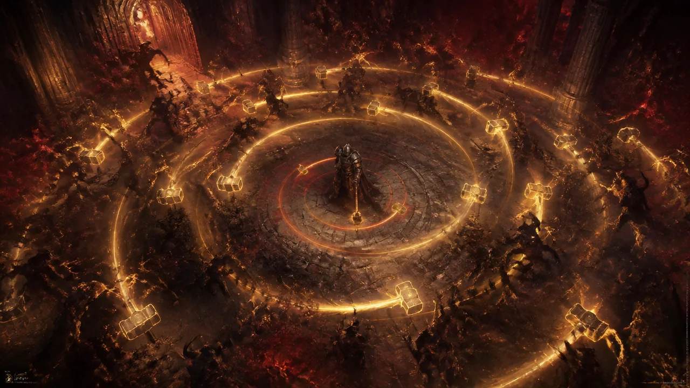
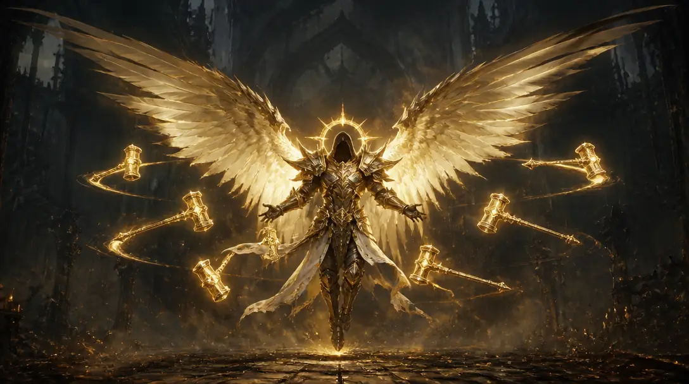
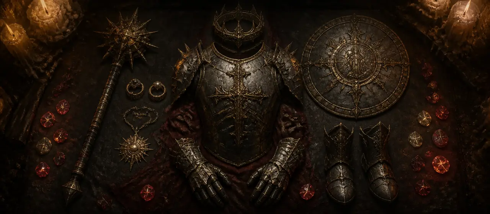

Un build qui ne cherche pas à empiler des dégâts. Il transforme une compétence en compétence de disciple, puis se fait payer quatre fois sur ce seul mot.
AuteurRob2628
VersionStarter (P200)
SermentDisciple
Parangon260 cases
Mise à jour19 septembre 2026
Le moteur
Pourquoi ce build frappe beaucoup plus fort que la somme de ses morceaux. La réponse tient en trois mots-clés, et dans la différence entre additionner et multiplier.
Le mot qui vaut ×500 %
Dans l’arbre, Marteau béni reçoit une amélioration qui s’appelle Halo de disciple. On la lit d’habitude comme un changement de forme : les marteaux ne sont plus lancés devant vous, ils tournent autour de vous. C’est vrai, mais ce n’est pas l’essentiel. La première phrase du texte dit autre chose : Marteau béni devient une compétence de disciple.
À partir de cet instant, quatre systèmes qui ne se parlent jamais reconnaissent vos marteaux comme une compétence de disciple et les paient en conséquence : la panoplie Épiphanie de lumière à 5 pièces (×500 %), l’Aspect de la souveraineté de Lagera sur l’anneau (+40 à +60 %), le glyphe Apôtre au parangon, et le palier 2 pièces de la même panoplie qui fait recharger l’ultime par les compétences de disciple.

Le principe : vous ne lancez pas les marteaux, vous êtes le centre autour duquel ils tournent. Tout le reste du build sert à faire durer ce centre et à multiplier ce qui le traverse.
La boucle fermée
Le palier 2 pièces dit que les compétences de disciple réduisent le temps de recharge d’Arbitre de la justice. Vos marteaux sont des compétences de disciple. Ils rechargent donc eux-mêmes l’ultime qui leur donne le ×500 %. Le build s’alimente tout seul.
Le deuxième mot : sacré
Marteau béni inflige des dégâts sacrés. Trois pièces différentes paient sur ce type de dégâts, et aucune ne le dit à l’autre : l’Aspect du châtiment sacré sur les gants (+40 à +60 %), le grand rubis serti dans l’arme (+32 %), et le glyphe Juge au parangon (+10,4 %). Trois facteurs séparés qui se composent.
C’est aussi pour ça que les rubis vont dans l’arme, le bouclier et les anneaux plutôt qu’ailleurs : dans une arme, le rubis donne un multiplicateur de dégâts sacrés ; dans une armure, il ne donne que de la force.
Le troisième mot : arbitre
La forme d’arbitre n’est pas un ultime qu’on lance de temps en temps, c’est l’état normal du personnage. Presque tout le build est conditionné à elle : le ×500 % de la panoplie, l’Aspect de l’ascension qui empile 10 × 5 à 7 % et perd tout en sortant, l’Aspect de la discorde céleste qui convertit les victimes en dégâts aux vulnérables, la forge des gants (« dégâts en forme d’arbitre ») et celle des jambières (« durée d’Arbitre »).
D’où Blâme à 1/15 : un seul rang, mais l’amélioration Rassemblement des coupables qui donne une charge supplémentaire. Grâce au serment du Disciple, Blâme rallume la forme d’arbitre. C’est un interrupteur, pas une arme.
Additionner, multiplier : le même mot, deux mathématiques
Diablo IV range presque tous vos bonus dans des sacs communs. À l’intérieur d’un sac, les pourcentages s’additionnent, et chaque nouveau pourcentage rapporte moins que le précédent. Quelques bonus échappent à cette règle : le jeu les marque ⟨x⟩ dans ses infobulles. Ceux-là forment leur propre facteur et multiplient tout le reste.
L’exemple qui résume tout
Le glyphe Apôtre donne environ +327 % de dégâts aux compétences de disciple. La panoplie donne ×500 % aux compétences de disciple. Même formulation, même cible — et pourtant le premier va se diluer dans un sac déjà plein, tandis que le second multiplie le total obtenu. Le plus petit des deux nombres est le plus puissant.
Tout ce qui multiplie, et ce qui ne multiplie pas. Les lignes marquées ⟨x⟩ forment chacune leur propre facteur.
Source
Origine
Effet
⟨x⟩ Épiphanie de lumière (5 p)
Talismans
×500 % aux compétences de disciple
⟨x⟩ Ailes séraphines
Arbre
+200 % aux frappes ailées
⟨x⟩ Balise
Parangon
+90 % si un allié est dans vos auras
⟨x⟩ Morgenstern du héraut
Arme
+80 à +100 % à Marteau béni
⟨x⟩ Implacabilité
Parangon
+80 % en mouvement et 2 s après
⟨x⟩ Aspect de l’ascension
Bouclier
+5 à +7 % × 10 cumuls
⟨x⟩ Aspect du châtiment sacré
Gants
+40 à +60 % aux dégâts sacrés et de feu
⟨x⟩ Aspect de la souveraineté de Lagera
Anneau I
+40 à +60 % aux compétences de disciple
⟨x⟩ Aspect de la discorde céleste
Amulette
+1 à 1,5 % par victime, jusqu’à 75 %
⟨x⟩ Opus de Griswold
Talisman
+0,8 à 1 % par adversaire touché, jusqu’à 50 %
⟨x⟩ Château
Parangon
125 % de la réduction d’armure en dégâts
⟨x⟩ Porte-bouclier
Parangon
110 % des chances de bloquer en dégâts
⟨x⟩ Grand rubis
Arme
+32 % aux dégâts sacrés et de feu
⟨x⟩ Voile d’argent
Anneau II
+5 à +15 % aux compétences principales
⟨x⟩ Couronne du tueur de dieux
Casque
+7,5 à +10 % sur les cibles marquées
⟨x⟩ Esprit
Glyphe
+14,2 % de dégâts critiques
⟨x⟩ Juge
Glyphe
+10,4 % aux dégâts de feu et sacrés
⟨x⟩ Apôtre · Splendeur
Glyphes
+10,4 % aux vulnérables · +10,4 % de dégâts
⟨x⟩ Rite de vengeance · Rite de puissance
Arbre
les auras converties en dégâts critiques et en dégâts
Apôtre — part additive
Glyphe
+327 % aux compétences de disciple, additif
Esprit — part additive
Glyphe
+185 % de dégâts critiques, additif
Protections superposées, vitesse d’incantation…
Divers
sac commun, rendement décroissant
Trois conversions que rien ne signale en jeu
La partie la plus difficile à deviner, c’est que plusieurs pièces ne donnent pas de dégâts : elles transforment une statistique défensive en dégâts.
Blocage → dégâts. Le nœud légendaire Porte-bouclier augmente vos dégâts à hauteur de 110 % de vos chances de bloquer. L’Aspect des protections superposées, sur les jambières, travaille la même statistique.
Armure → dégâts. Le nœud légendaire Château augmente vos dégâts à hauteur de 125 % de la réduction de dégâts que vous octroie votre armure. Chaque point d’armure devient offensif.
Mouvement → dégâts. Le nœud légendaire Implacabilité donne +80 % pendant que vous vous déplacez et deux secondes après. Comme la rotation consiste à esquiver sans arrêt, ce bonus ne s’éteint jamais.
Pourquoi le mercenaire compte vraiment
Le nœud légendaire Balise donne +90 % « lorsqu’au moins une cible alliée se trouve à l’intérieur de vos auras ». En solo, sans mercenaire, ce nœud ne sert à rien. Avec lui, c’est un des plus gros facteurs de la page — et il est gratuit.
Même logique pour la Couronne du tueur de dieux : quand vous tentez d’incapaciter un adversaire, elle attire à vous tous ceux qui l’entourent. Blâme étourdit ; le casque ramène donc le paquet au centre, là où les marteaux tournent déjà.
Comment on le joue
Quatre gestes. Chacun déclenche une partie du moteur décrit plus haut.

En forme d’arbitre, le personnage cesse d’être un lanceur de sorts pour devenir une pièce d’artillerie mobile.
1. Blâmer pour entrer en forme d’arbitre. Deux charges, un temps de recharge raccourci par chaque cible touchée. Tant que la forme est active, le ×500 % s’applique, l’Ascension empile, la Discorde céleste accumule.
2. Poser Sacre, les auras et les recharges. Sacre pose une zone qui affaiblit et régénère la foi ; les auras montent la vitesse d’attaque, le critique puis les dégâts critiques.
3. Esquiver sans arrêt. Ce n’est pas un déplacement, c’est une attaque : chaque deux mètres lance un marteau gratuit par le Voile d’argent, maintient Implacabilité et remplit la rune Cem.
4. Entretenir Marteau béni. Les marteaux tournent seuls, mais chaque coup raccourcit le temps de recharge de l’ultime et relance la boucle.
Le sens de tout ça
Vous n’alternez pas entre attaque et défense. Vous maintenez quatre fenêtres ouvertes en même temps : forme d’arbitre, cumuls d’aura, esquive récente, adversaires groupés. Le build entier consiste à les faire se chevaucher en permanence.
Compétences
Six emplacements, vingt-quatre nœuds dépensés dans l’arbre. Les améliorations marquées ⟨x⟩ forment leur propre facteur.
Principale
Marteau béni
rang 15/15
Vous lancez un marteau béni qui décrit une trajectoire en spirale et inflige … points de dégâts.
Réduction du coût
L’utilisation de Marteau béni réduit son coût de 5% pendant 2 s, jusqu’à un maximum de 5 fois.
Halo de disciple
Marteau béni devient une compétence de disciple. Marteau béni vous suit et tourne autour de vous pour infliger … points de dégâts à une vitesse augmentée de 20%.
Vitesse d’incantation
Marteau béni obtient 15% de vitesse d’incantation supplémentaire et ses marteaux se déplacent 25% plus vite.
Aura
Aura de fanatisme
rang 15/15
Compétence passive : lorsque vous dépensez des points de foi, la puissance qui émane de vous fait bénéficier, à vous et vos alliés, de … de vitesse d’attaque et de … de chances d’infliger un coup critique pendant 3 s, jusqu’à un maximum de … fois. Compétence active : vous affaiblissez l’ensemble des adversaires à proximité pendant 4 s.
Maximum de ressource supplémentaire
La compétence passive d’Aura de fanatisme vous octroie également, ainsi qu’à vos alliés, 15% de votre maximum de ressource.
Rite de vengeance ⟨x⟩
La compétence passive d’Aura de fanatisme augmente les dégâts critiques de … pour vous et vos alliés. Les coups critiques déclenchent la compétence passive de Fanatisme.
Puissance
Aura de fanatisme obtient 15% de bonus de puissance supplémentaire.
Aura
Aura de défiance
rang 14/15
Compétence passive : votre présence vous renforce, vous et vos alliés, et octroie … d’armure et … de résistance à tous les éléments. Compétence active : vous devenez inarrêtable pendant 2 s.
Inarrêtable
Lorsque vous ou vos alliés subissez une blessure, vous devenez inarrêtables pendant 2 s et obtenez 10 cumuls de détermination. Cet effet ne peut pas se produire plus d’une fois toutes les 5 s.
Rite de puissance ⟨x⟩
Aura de défiance augmente les dégâts que vous infligez de … pendant 4 s lorsque vous gagnez des cumuls de détermination.
Puissance
Aura de défiance obtient 15% de bonus de puissance supplémentaire.
Angélique°
Sacre
rang 5/15
Vous baignez dans la Lumière pendant … s, ce qui vous soigne, vous et vos alliés, à hauteur de … du maximum de points de vie ( … ) par seconde et inflige … points de dégâts par seconde aux adversaires.
Affaiblissement
Sacre affaiblit les adversaires qui se trouvent à l’intérieur.
Terre sacrée ⟨x⟩
La taille de Sacre est augmentée de 56%. Lorsque vous vous tenez dans la zone d’effet de Sacre, vous et vos alliés infligez 7% points de dégâts supplémentaires et consommez 15% de ressources en moins.
Génération de ressources
Sacre augmente la génération de ressource principale pour vous et vos alliés de 10%.
Angélique°
Blâme
rang 1/15
Vous exploitez la Lumière et attirez les adversaires au bout de … s, ce qui les étourdit brièvement et leur inflige … points de dégâts. Lorsque vous utilisez Blâme, vous pouvez vous mouvoir librement pendant … s.
Affaiblissement
Blâme affaiblit les adversaires pendant 4 s.
Rassemblement des coupables
Blâme obtient désormais 1 charge supplémentaire et applique un effet de vulnérabilité pendant 4 s.
Augmentation de taille
La taille de Blâme est augmentée de 50%.
Ultime
Arbitre de la justice
rang 15/15
Vous vous élevez vers les Cieux et retombez sur le champ de bataille sous forme d’arbitre en infligeant … points de dégâts. La transformation dure … s.
Relance de Frappe ailée
Le temps entre chaque frappe ailée de la forme d’arbitre est réduit de 0.5 s.
Ailes séraphines ⟨x⟩
La forme d’arbitre obtient les effets suivants : les frappes ailées infligent 200% de dégâts supplémentaires ; les frappes ailées rendent l’adversaire vulnérable.
Durée
La durée d’Arbitre est augmentée de 10 s.
Équipement
Dix pièces, dont huit aspects que l’on trouve au codex — c’est ce qui rend cette version accessible. Les affixes en doré sont majeurs.

Aucune de ces pièces ne fonctionne seule. C’est l’assemblage qui produit le résultat, pas la qualité individuelle des objets.
Casque
Couronne du tueur de dieux°
Unique
⟨x⟩ Quand vous tentez d’incapaciter un adversaire, vous le marquez, lui et tous les adversaires alentour, vous les attirez à vous et leur infligez +7,5 à +10 % de dégâts supplémentaires.
Affixes de Casque
Force
Maximum de points de vie
Foi par seconde
Réduction du temps de recharge
ForgeMaximum de points de vie — Endurance du monde, défensif
Cir
Que
Armure
Aspect du chef-d’œuvre angélique°
Aspect
Votre résistance à tous les éléments est augmentée de 100 à 140 % en forme d’arbitre.
Affixes de Armure
Force
Foi par seconde
Maximum de points de vie
Résistance à tous les éléments
ForgeMaximum de points de vie — Endurance du monde, défensif
Cem
Wat
Gants
Aspect du châtiment sacré°
Aspect
⟨x⟩ Les dégâts sacrés et de feu sont augmentés de +40 à +60 %.
Affixes de Gants
Chances de coup critique
Rangs à Marteau béni
Multiplicateur de dégâts critiques
Multiplicateur de dégâts aux cibles vulnérables
ForgeDégâts en forme d’arbitre — Finesse du gardien, offensif
Jambières
Aspect des protections superposées°
Aspect
Votre réduction des dégâts au blocage est augmentée de 30 à 40 %.
Le temps de recharge de l’esquive d’arbitre est réduit de 1 à 3 s.
Affixes de Bottes
Force
Maximum de points de vie
Les attaques réduisent le temps de recharge de l’esquive
Régénération de foi
ForgePuissance de l’Aura de fanatisme — Innovation d’aura, utilitaire
Arme
Morgenstern du héraut
Unique
⟨x⟩Marteau béni inflige +80 à +100 % de dégâts supplémentaires. Coup de chance : jusqu’à 20 % de chances de générer un marteau béni sur la cible touchée.
Affixes de Arme
Dégâts d’arme
Rangs à Marteau béni
Force
Multiplicateur de dégâts critiques
ForgeChances de coup critique — Destruction du monde, armes
Grand rubis
Bouclier
Aspect de l’ascension°
Aspect
⟨x⟩ Lancer une compétence qui octroie la forme d’arbitre augmente vos dégâts de +5 à +7 %, cumulable 10 fois. Tous les cumuls sont perdus en quittant la forme d’arbitre.
Affixes de Bouclier
Force
Chances de coup critique
Réduction du temps de recharge
Réduction des dégâts
ForgeChances de coup critique — Destruction du monde, armes
Grand rubis
Amulette
Aspect de la discorde céleste°
Aspect
⟨x⟩ En forme d’arbitre, chaque victime octroie +1 à +1,5 % de dégâts supplémentaires aux cibles vulnérables, jusqu’à 50 à 75 %.
Affixes de Amulette
Multiplicateur de dégâts aux cibles vulnérables
Rangs à toutes les compétences
Force
Multiplicateur de dégâts critiques
ForgeRéduction du temps de recharge — Stabilité du monde, ressource
Grande émeraude
Anneau I
Aspect de la souveraineté de Lagera°
Aspect
⟨x⟩ Vos compétences de disciple infligent +40 à +60 % de dégâts supplémentaires.
Affixes de Anneau I
Chances de coup critique
Force
Multiplicateur de dégâts critiques
Réduction du temps de recharge
ForgeCoup de chance : jusqu’à 15 % de chances de restaurer de la ressource — Stabilité du monde, ressource
Grand rubis
Anneau II
Voile d’argent
Unique
⟨x⟩ L’esquive d’arbitre déclenche une compétence principale équipée aléatoire tous les 2 m parcourus. Les compétences principales infligent +5 à +15 % de dégâts supplémentaires pendant l’esquive d’arbitre et les 4 s qui suivent.
Affixes de Anneau II
Force
Rangs aux compétences principales
Multiplicateur de dégâts aux cibles vulnérables
Multiplicateur de dégâts critiques
ForgeCoup de chance : jusqu’à 15 % de chances de restaurer de la ressource — Stabilité du monde, ressource
Grande topaze
Runes et gemmes
Les runes fonctionnent par paires : une rune de rituel remplit la jauge d’offrandes, une rune d’invocation la dépense.
Cir
Rune de rituel° · magique
Octroie 300 offrandes. Lancez 5 compétences, puis vous êtes épuisé pendant 3 s.
Que
Rune d’invocation° · rare
Requiert 300 offrandes. Invoque le Rempart de terre du druide et vous octroie une barrière. Surplus : durée augmentée.
Cem
Rune de rituel° · magique
Octroie 75 offrandes. Condition : lancer une esquive.
Wat
Rune d’invocation° · rare
Requiert 100 offrandes. Invoque l’Affaiblissement horrible du nécromancien : ralentit les adversaires, réduit leurs dégâts et vous permet de les exécuter.
Cir + Que — Casque
Cir remplit la jauge en cinq incantations, Que la vide aussitôt en barrière. Une protection permanente qui ne coûte pas un bouton.
Cem + Wat — Armure
Cem se remplit à chaque esquive — et ce build esquive sans arrêt. Wat sort alors un affaiblissement de masse qui ralentit, réduit les dégâts adverses et ouvre l’exécution. Le mot runique tourne tout seul, alimenté par la rotation elle-même.
Gemmes
Grand rubis
Arme, bouclier, anneau I, jambières
⟨x⟩ Dans une arme : +32 % de multiplicateur de dégâts de feu et sacrés. Dans une armure : 150 de force.
Grande émeraude
Amulette
Dans un bijou : 4375 de résistance au poison.
Grande topaze
Anneau II
Dans un bijou : 4375 de résistance à la foudre.
Talismans et sceau
Cinq talismans de panoplie plus un unique. Le sceau ajoute deux emplacements — sans lui, la panoplie complète ne rentre pas.
FerÉpiphanie de lumière
MlorÉpiphanie de lumière
BerúÉpiphanie de lumière
LintaÉpiphanie de lumière
PhobaÉpiphanie de lumière
Opus de Griswoldunique
Épiphanie de lumière°
5 talismans portés → bonus 5 pièces
(2)
Les compétences de disciple réduisent le temps de recharge d’Arbitre de la justice de 0,1 s quand elles infligent des dégâts, ou de 0,5 s si elles ont un temps de recharge.
(3)
En forme d’arbitre : +30 % de maximum de points de vie et ×10 % de vitesse de déplacement.
(5)
Lancer Arbitre de la justice déchaîne tous vos ultimes, déclenche Colère des cieux et Forteresse et remplace Arbitre par Zénith pendant 10 s. ×500 % de dégâts supplémentaires avec les compétences de disciple pendant toute la durée d’Arbitre. Tous les ultimes deviennent aussi des compétences de disciple.
Opus de Griswold°
Talisman unique · hors panoplie
Infliger des dégâts directs octroie ×0,8 à 1 % de dégâts critiques supplémentaires par adversaire touché en 10 s, jusqu’à ×40 à 50 %. Au maximum : coup de chance, les coups critiques ont jusqu’à 50 % de chances d’infliger le double de dégâts, de vous soigner et de rafraîchir la durée du bonus.
Sceau Dégâts critiques, +1 emplacement de talisman, +1 emplacement de talisman.
Parangon
Cinq planches, 260 cases. Pour chacune : le glyphe et son niveau, le nœud légendaire, et les nœuds rares à prendre avec ce à quoi ils servent.
1
Commencer
Rotation 0° · 42 cases
GlypheEspritniveau 100
59 points de volonté dans la portée → +185 % de dégâts critiques (additif), plus ⟨x⟩+14.2 % de dégâts critiques.
Nœuds rares à prendre
Force de frappeÉlites · Force · Dégâts
MusclesDégâts · Vie
Puissance brutePhysique · Dégâts · Force
TénacitéVie · Armure
2
Château
Rotation 90° · 42 cases
GlypheArbitre°niveau 100
117 points de force dans la portée. L’effet exact de ce glyphe n’est pas encore dans les données dont je dispose — je ne l’invente pas.
Château
Les dégâts que vous infligez sont augmentés à hauteur de 125% de votre réduction des dégâts octroyée par l’armure.
Nœuds rares à prendre
BlindageArmure · Force
ChevaleriePhysique · Dégâts · Force
RobustesseBlocage · Réduction des dégâts
3
Porte-bouclier
Rotation 180° · 63 cases
GlypheApôtreniveau 100
115 points de force dans la portée → +327 % de dégâts des compétences de disciple (additif), plus ⟨x⟩+10.4 % de dégâts aux cibles vulnérables.
Porte-bouclier
Les dégâts que vous infligez sont augmentés à hauteur de 110% de vos chances de bloquer.
Nœuds rares à prendre
ChevaleriePhysique · Dégâts · Force
CompressionForce · Épines
CroissanceÉpines · Vie
Garde du corpsBlocage · Physique · Dégâts
RobustesseBlocage · Réduction des dégâts
4
Implacabilité
Rotation 270° · 50 cases
GlypheSplendeurniveau 100
69 points de intelligence dans la portée. ⟨x⟩+10.4 % de dégâts.
Implacabilité ⟨x⟩
Lorsque vous vous déplacez et pendant les 2 s qui suivent, vous infligez 80% de dégâts supplémentaires et vos temps de recharge sont réduits de 30%.
Nœuds rares à prendre
BélierVitesse de déplacement · Armure
DervicheForce · Temps de recharge
EndurcissementTemps de recharge · Armure
PersistanceForce · Résistance
5
Balise
Rotation 90° · 63 cases
GlypheJugeniveau 100
79 points de intelligence dans la portée → +213 % de dégâts des compétences (additif), plus ⟨x⟩+10.4 % de dégâts de feu et sacrés.
Balise ⟨x⟩
Lorsqu’au moins une cible alliée se trouve à l’intérieur de vos auras, vous infligez 90% points de dégâts supplémentaires.
Nœuds rares à prendre
Bouclier à pointesBlocage · Dégâts
ConstitutionRésistance · Vie
DéterminationFoi · Force
FlouCritique · Dégâts · Vitesse d’attaque
RobusteVie · Armure
VirtuoseForce · Dégâts
Ce que font vraiment les glyphes
Un glyphe a deux moitiés. La première compte les points de caractéristique achetés dans sa portée et rend un bonus additif — souvent très gros, et c’est ce que tout le monde regarde. La seconde est un petit bonus multiplicatif, autour de 10 à 15 % au niveau 100, que presque personne ne mentionne. Le petit nombre compte davantage que le grand.
Le placement des planches n’est donc pas libre : chaque planche est tournée pour que le maximum de nœuds de la bonne caractéristique tombe dans le cercle du glyphe. Les rotations indiquées ci-dessus sont le résultat de cette optimisation, pas une fantaisie.
Mercenaire et annexes
Qui vous accompagne, où vous jouez, ce que vous buvez.
Mercenaire
Subo, l’archer ivre°
Compétence : Champ de langueur° · déclencheur : Marteau béni
Renfort : Aldkin, l’enfant maudit°
Le nœud légendaire Balise donne +90 % « lorsqu’au moins une cible alliée se trouve à l’intérieur de vos auras ». En solo, sans mercenaire, ce nœud ne sert à rien.
Plans de guerre
Arbre des Murmures
Donjons du Cauchemar
Vague infernale
Les bas-fonds
Boss de repaire
Hordes infernales
La fosse
Dons divins
Essence des ombres°
Essence d’angoisse°
Essence de misère°
Essence de feu infernal°
Essence de mensonges°
Essence de cris°
Essence de douleur°
Essence de péché°
Élixirs
Élixir d’avantage°
Temps anciens°
Frénésie de reddamine°
Épices apaisantes°
Et si vous décrochez les mythiques
Cette page décrit la version Starter, celle qui couvre l’immense majorité d’une saison. La version Mythique change six choses — le moteur, lui, ne bouge pas.
Emplacement
Starter
Mythique
Casque
Couronne du tueur de dieux
Couronne de Leoric compte comme un bijou et multiplie par 1,3 l’effet des gemmes serties
Armure
Aspect du chef-d’œuvre angélique
Énigme l’esquive devient une téléportation
Gants
Aspect du châtiment sacré
Poings du destin dégâts aléatoires entre 100 % et 250–300 %
Anneau I
Aspect de la souveraineté de Lagera
Anneau du ciel sans étoiles +10 % par dépense de foi, jusqu’à +50 %
Gemmes
rubis, émeraude, topaze
éclats d’âme dont l’Éclat de la pierre d’âme noire, ×2,5 % par âme jusqu’à 200 cumuls
Compétence
Sacre
Égide le sceau mythique libère un emplacement et change la panoplie
Changements de la saison 15
Relevés par Rob dans ses notes de build.
Général
Azurewrath° : 120 % → 150 %. N’explose plus les adversaires, n’endommage que la cible gelée.
Aspect de la force céleste° : 40 % → 30 %.
Aspect de l’attente° : 6 % → 8 %.
Aspect du revirement° : octroie désormais aussi de la réduction de dégâts.
Paladin
Échelle de caractéristique principale : 1,25 → 1,625.
Carreau sacré° : amélioration Jugement, +20 % de dégâts.
Bouclier béni° : variante Bouclier de justice, +50 % aux dégâts de Jugement pendant 5 s.
Judicateur° : +100 % de dégâts s’il ne touche qu’une cible.
Aspect de la loi de Watkins° : consomme et réapplique désormais Jugement.
Aspect du judicateur° : 60 % → 80 %.
Chant de la cathédrale° : consommer Jugement 100 fois appelle une Lance des cieux sur un adversaire aléatoire. Jugement sur un boss compte pour 10.
Linta du feu radieux° : à 5 pièces, +25 % aux dégâts du Jour du jugement, cumuls maximum réduits à 20.